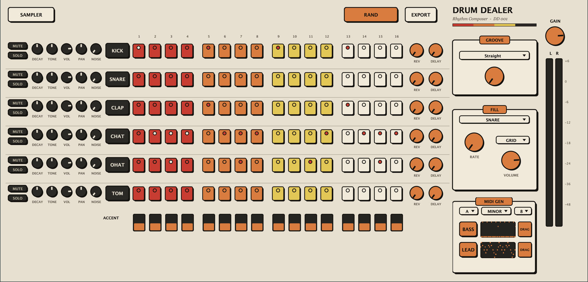

Rhythm Composer — DD 001

Grátis. Já vem com a biblioteca de samples de fábrica — instalou, apertou play, tem som.
É uma prévia com os samples de fábrica de verdade, direto no navegador. Clique nos steps pra editar o groove, mexa no BPM, aperte RAND — ele troca o padrão e os samples, igual no plugin. Clicar no nome do instrumento troca só o sample dele. O plugin completo faz muito mais — baixa lá em cima.
Formato VST3 (Ableton, FL Studio, Bitwig, Studio One, Cubase, Reaper…) e AU (Logic e GarageBand no Mac).
Também roda sozinho, sem DAW nenhum — instala junto um app standalone.
*Pro Tools só aceita AAX; use a versão standalone junto dele.
C:\Program Files\Common Files\VST3).Quer usar os seus sons? Clique em SAMPLER dentro do plugin: abre uma pasta Vst Dealer na sua área de trabalho com subpastas Kick, Snare, Clap, Hat e Tom. Jogue seus wavs lá e eles entram no sorteio junto com os de fábrica. O mesmo vale pros MIDIs do gerador, nas pastas Bass e Lead.